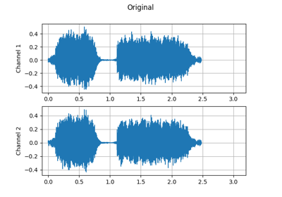

torchaudio.sox_effects.apply_effects_tensor¶
- torchaudio.sox_effects.apply_effects_tensor(tensor: Tensor, sample_rate: int, effects: List[List[str]], channels_first: bool = True) Tuple[Tensor, int][source]¶
Apply sox effects to given Tensor

Note
This function only works on CPU Tensors. This function works in the way very similar to
soxcommand, however there are slight differences. For example,soxcommand adds certain effects automatically (such asrateeffect afterspeedandpitchand other effects), but this function does only applies the given effects. (Therefore, to actually applyspeedeffect, you also need to giverateeffect with desired sampling rate.).- Parameters:
tensor (torch.Tensor) – Input 2D CPU Tensor.
sample_rate (int) – Sample rate
effects (List[List[str]]) – List of effects.
channels_first (bool, optional) – Indicates if the input Tensor’s dimension is [channels, time] or [time, channels]
- Returns:
Resulting Tensor and sample rate. The resulting Tensor has the same
dtypeas the input Tensor, and the same channels order. The shape of the Tensor can be different based on the effects applied. Sample rate can also be different based on the effects applied.- Return type:
(Tensor, int)
- Example - Basic usage
>>> >>> # Defines the effects to apply >>> effects = [ ... ['gain', '-n'], # normalises to 0dB ... ['pitch', '5'], # 5 cent pitch shift ... ['rate', '8000'], # resample to 8000 Hz ... ] >>> >>> # Generate pseudo wave: >>> # normalized, channels first, 2ch, sampling rate 16000, 1 second >>> sample_rate = 16000 >>> waveform = 2 * torch.rand([2, sample_rate * 1]) - 1 >>> waveform.shape torch.Size([2, 16000]) >>> waveform tensor([[ 0.3138, 0.7620, -0.9019, ..., -0.7495, -0.4935, 0.5442], [-0.0832, 0.0061, 0.8233, ..., -0.5176, -0.9140, -0.2434]]) >>> >>> # Apply effects >>> waveform, sample_rate = apply_effects_tensor( ... wave_form, sample_rate, effects, channels_first=True) >>> >>> # Check the result >>> # The new waveform is sampling rate 8000, 1 second. >>> # normalization and channel order are preserved >>> waveform.shape torch.Size([2, 8000]) >>> waveform tensor([[ 0.5054, -0.5518, -0.4800, ..., -0.0076, 0.0096, -0.0110], [ 0.1331, 0.0436, -0.3783, ..., -0.0035, 0.0012, 0.0008]]) >>> sample_rate 8000
- Example - Torchscript-able transform
>>> >>> # Use `apply_effects_tensor` in `torch.nn.Module` and dump it to file, >>> # then run sox effect via Torchscript runtime. >>> >>> class SoxEffectTransform(torch.nn.Module): ... effects: List[List[str]] ... ... def __init__(self, effects: List[List[str]]): ... super().__init__() ... self.effects = effects ... ... def forward(self, tensor: torch.Tensor, sample_rate: int): ... return sox_effects.apply_effects_tensor( ... tensor, sample_rate, self.effects) ... ... >>> # Create transform object >>> effects = [ ... ["lowpass", "-1", "300"], # apply single-pole lowpass filter ... ["rate", "8000"], # change sample rate to 8000 ... ] >>> transform = SoxEffectTensorTransform(effects, input_sample_rate) >>> >>> # Dump it to file and load >>> path = 'sox_effect.zip' >>> torch.jit.script(trans).save(path) >>> transform = torch.jit.load(path) >>> >>>> # Run transform >>> waveform, input_sample_rate = torchaudio.load("input.wav") >>> waveform, sample_rate = transform(waveform, input_sample_rate) >>> assert sample_rate == 8000
- Tutorials using
apply_effects_tensor: - Audio Data Augmentation